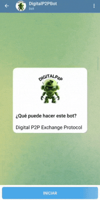

@Digitalp2pbot
En este sitio encontrarás información sobre @Digitalp2pbot. Este es un bot de Telegram para comprar y vender USDT,USDC, de forma P2P, con tu moneda local y sin hacer KYC o entregar datos personales.
Guía de inicio rápido
-
Descarga una wallet compatible con USDT, USDC (Wallets recomendadas).
-
Obtén un usuario de Telegram.
-
Inicia @DigitalP2PBot.

-
Encuentra ofertas de compra o venta de USDT, USDC en:
-
El canal general de ofertas: @digitalp2porders

-
Cuando tomes una oferta @Digitalp2pbot te guiará paso a paso en el proceso de compra/venta.
-
Si no encuentras una oferta que te convenga, crea una tú y espera a que alguien la tome. Escribe en @DigitalP2PBot
/buypara comprar USDT USDC, o/sellpara vender USDT USDC, de acuerdo a lo que quieras hacer y este te guiará en el proceso. -
Comienza a comprar y vender.
-
Encuentra respuestas a tus dudas en la sección FAQ.
Recomendaciones
-
Si tienes alguna duda que no esté respondida en https://Digitalp2p/aprende únete al grupo de soporte y pregunta allí.
-
Reporta errores o sugiere mejoras en nuestros repositorios de GitHub.
-
Síguenos en X para que no te pierdas los anuncios principales.